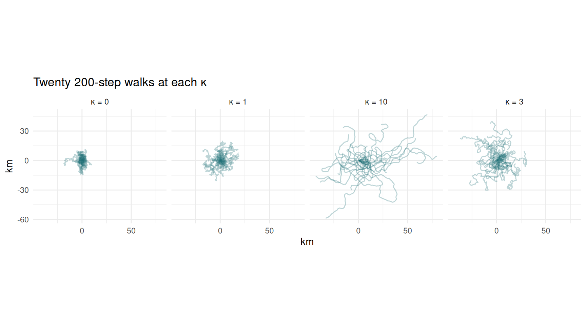
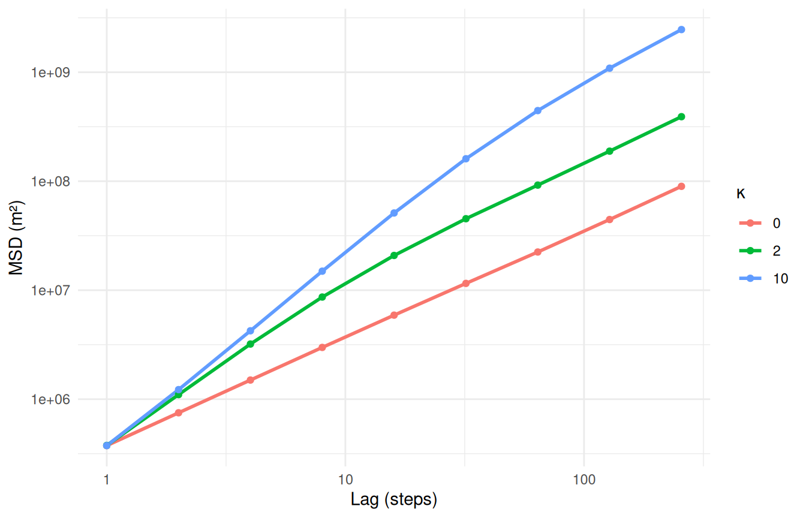
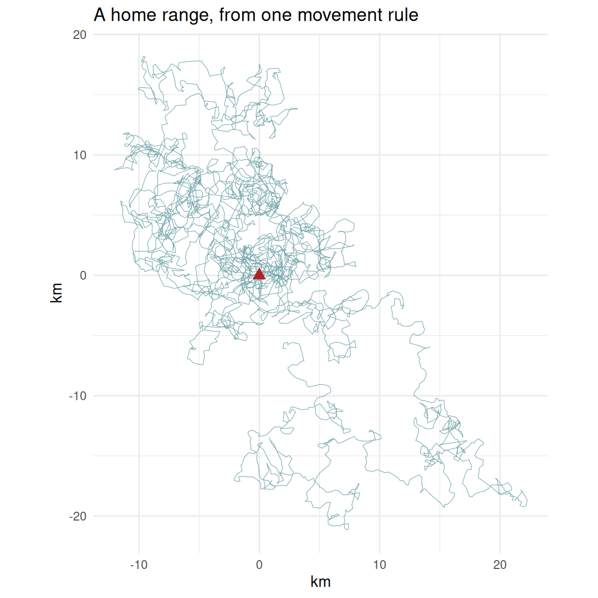
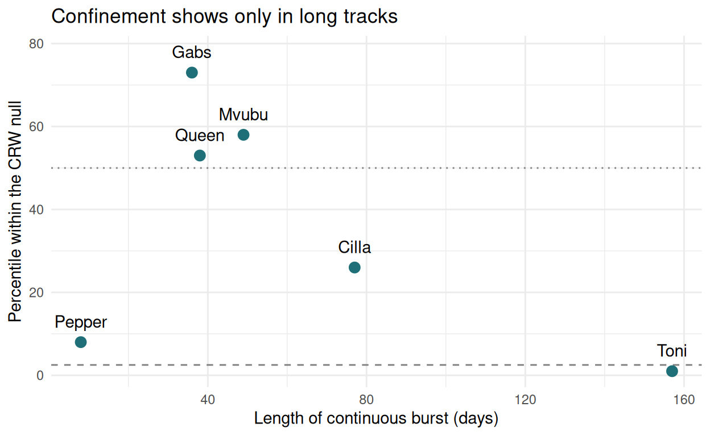

Practical 5 — Simulating movement
Session 5 · Movement models and simulation
Goals. Write a correlated random walk simulator from scratch; watch straightness emerge as persistence grows; find the ballistic–diffusive crossover in mean squared displacement; add a bias and simulate homing; discover why a power-law fit is not evidence of a Lévy walk; test whether real buffalo are range-resident against a simulated null.
Time: ~70 minutes. Packages: circular, amt, dplyr, ggplot2.
Task 2 — Persistence makes straightness
set.seed(1)
kappas <- c(0, 1, 3, 10)
sims <- lapply(kappas, function(k) {
bind_rows(lapply(1:20, function(i) simulate_crw(200, kappa = k)), .id = "sim") |>
mutate(kappa = k)
}) |> bind_rows()
ggplot(sims, aes(x / 1000, y / 1000, group = sim)) +
geom_path(alpha = 0.3, colour = "#1f6f78") +
facet_wrap(~ paste("κ =", kappa), nrow = 1) +
coord_equal() +
labs(x = "km", y = "km", title = "Twenty 200-step walks at each κ") +
theme_minimal()
Your turn
2a. Compute the straightness index (net displacement / path length) for each walk and summarise it by κ.
sims |>
group_by(kappa, sim) |>
summarise(net = sqrt(last(x)^2 + last(y)^2), path = sum(sl), .groups = "drop") |>
group_by(kappa) |>
summarise(median_straightness = round(median(net / path), 3))
#> # A tibble: 4 × 2
#> kappa median_straightness
#> <dbl> <dbl>
#> 1 0 0.059
#> 2 1 0.138
#> 3 3 0.195
#> 4 10 0.327Straightness rises steeply with κ. But even at κ = 10 it is well below 1 over 200 steps: small turns accumulate, and a long enough correlated walk always ends up wandering. Straightness is a property of the walk and of the number of steps you measure it over.
Task 3 — Mean squared displacement
msd <- function(d, lags) {
sapply(lags, function(L)
mean((d$x[-(1:L)] - head(d$x, -L))^2 + (d$y[-(1:L)] - head(d$y, -L))^2))
}
lags <- 2^(0:8)
set.seed(2)
msd_tab <- lapply(c(0, 2, 10), function(k) {
m <- rowMeans(sapply(1:30, function(i) msd(simulate_crw(2000, kappa = k), lags)))
data.frame(kappa = k, lag = lags, msd = m)
}) |> bind_rows()Your turn
3a. Plot MSD against lag on log–log axes. 3b. Estimate the slope at short lags (1–4) and at long lags (64–256).
ggplot(msd_tab, aes(lag, msd, colour = factor(kappa))) +
geom_line(linewidth = 1) + geom_point() +
scale_x_log10() + scale_y_log10() +
labs(x = "Lag (steps)", y = "MSD (m²)", colour = "κ") +
theme_minimal()
msd_tab |>
group_by(kappa) |>
summarise(
slope_short = coef(lm(log(msd[lag <= 4]) ~ log(lag[lag <= 4])))[2],
slope_long = coef(lm(log(msd[lag >= 64]) ~ log(lag[lag >= 64])))[2]
) |>
mutate(across(starts_with("slope"), \(z) round(z, 2)))
#> # A tibble: 3 × 3
#> kappa slope_short slope_long
#> <dbl> <dbl> <dbl>
#> 1 0 1 1
#> 2 2 1.55 1.04
#> 3 10 1.75 1.23The uncorrelated walk (κ = 0) has slope 1 at every lag: diffusive throughout. Persistent walks start ballistic (slope approaching 2: they keep going straight) and relax towards diffusive (slope 1) once they have forgotten their heading. The more persistent the walk, the later the crossover — at κ = 10 it has not quite finished even after 256 steps.
On a real track, the lag at which the slope drops from ~2 to ~1 estimates how long the animal holds its direction. A slope that drops towards 0 means something a random walk cannot do: the animal stops getting further away.
Task 4 — Bias: homing and central places
In simulate_bcrw(), each new heading is centred on a weighted circular mean of the previous heading and the bearing to goal; w is the weight on the goal.
Your turn
4a. Release an animal 10 km from home. How many steps does it take to come within 500 m, for w = 0.05, 0.1, 0.3?
steps_to_home <- function(w, n = 3000) {
d <- simulate_bcrw(n, goal = c(0, 0), w = w, kappa = 2, start = c(10000, 0))
hit <- which(sqrt(d$x^2 + d$y^2) < 500)
if (length(hit)) hit[1] else NA
}
set.seed(3)
homing <- lapply(c(0.05, 0.1, 0.3), function(w)
data.frame(w = w, steps = replicate(50, steps_to_home(w)))) |>
bind_rows()
homing |>
group_by(w) |>
summarise(median_steps = median(steps, na.rm = TRUE),
failed = sum(is.na(steps)))
#> # A tibble: 3 × 3
#> w median_steps failed
#> <dbl> <dbl> <int>
#> 1 0.05 1282. 22
#> 2 0.1 472 1
#> 3 0.3 76 0With the weakest bias, nearly half the walkers are still lost after 3,000 steps; doubling it gets almost all of them home, and a strong bias does it in a few dozen steps. The weak-bias walkers wander a long way first: over a short stretch you would not see the bias at all.
4b. Keep the goal at the start point and run the walker for a long time. What emerges?
truth <- truth_animal() # a central-place BCRW, 5,000 steps, fixed seed
ggplot(truth, aes(x / 1000, y / 1000)) +
geom_path(colour = "#1f6f78", linewidth = 0.2, alpha = 0.6) +
annotate("point", x = 0, y = 0, colour = "firebrick", size = 3, shape = 17) +
coord_equal() +
labs(x = "km", y = "km", title = "A home range, from one movement rule") +
theme_minimal()
A home range. Nothing in the rule mentions an area: the animal simply wanders, with a slight pull towards home. The boundary emerges.
This is our ground-truth animal. Because we wrote the rule, we can simulate it for as long as we like and know its true utilisation distribution — so in Session 6 we can check which home-range estimator recovers it.
Task 5 — Is it a Lévy walk?
Fit two models to step lengths above a threshold xmin, by maximum likelihood: a (shifted) exponential and a power law (Pareto). Both have one parameter, so AIC compares them fairly.
compare_tails <- function(x, xmin) {
x <- x[x >= xmin]
n <- length(x)
# power law: f(x) = (a - 1) / xmin * (x / xmin)^-a
s <- sum(log(x / xmin))
a <- 1 + n / s
ll_pow <- n * log(a - 1) - n * log(xmin) - a * s
# exponential shifted to start at xmin
lambda <- 1 / (mean(x) - xmin)
ll_exp <- n * log(lambda) - lambda * sum(x - xmin)
data.frame(n = n, mu_hat = round(a, 2),
AIC_exponential = round(2 - 2 * ll_exp),
AIC_power_law = round(2 - 2 * ll_pow),
winner = ifelse(ll_pow > ll_exp, "power law", "exponential"))
}Your turn
5a. Test it on data where you know the answer: 2,000 exponential steps, and 2,000 power-law steps with μ = 2. 5b. Now 2,000 steps from an animal that switches between two behaviours, each with exponential steps: 75% short (mean 60 m) and 25% long (mean 1,500 m).
set.seed(4)
bind_rows(
cbind(data = "exponential", compare_tails(rexp(2000, 1 / 300) + 50, 50)),
cbind(data = "power law, mu = 2", compare_tails(50 * runif(2000)^(-1), 50)),
cbind(data = "two exponential modes", compare_tails(c(rexp(1500, 1 / 60),
rexp(500, 1 / 1500)) + 10, 10))
)
#> data n mu_hat AIC_exponential AIC_power_law winner
#> 1 exponential 2000 1.61 26924 28220 exponential
#> 2 power law, mu = 2 2000 2.00 36053 23643 power law
#> 3 two exponential modes 2000 1.43 28076 25856 power lawThe method gets the first two right. But the mixture of two exponentials — two ordinary random walks, no power law anywhere — is “identified” as a power law, decisively. That is Benhamou’s (2007) point: a heavy-tailed step-length distribution is what you get whenever an animal switches between short-step and long-step behaviours.
A power-law fit describes the shape of the distribution. It cannot tell you the process. To claim a Lévy strategy you must first rule out that the long steps belong to a separate behavioural state — which is what the hidden Markov models of Session 8 are for.
Task 6 — Is a buffalo range-resident? A simulation test
Null hypothesis: the buffalo moves like a correlated random walk with its own step-length and turning-angle distributions, and no memory of place. Statistic: the radius of gyration of its longest continuous burst — the root-mean-square distance of its positions from their centre.
buffalo <- read.csv("data/buffalo_kruger.csv.gz") |>
transmute(id = individual.local.identifier, t = as.POSIXct(timestamp, tz = "UTC"),
x = location.long, y = location.lat) |>
filter(!is.na(x)) |>
distinct(id, t, .keep_all = TRUE)
trk <- make_track(buffalo, x, y, t, id = id, crs = 4326) |>
transform_coords(crs_to = 32736)
radius_of_gyration <- function(x, y) sqrt(mean((x - mean(x))^2 + (y - mean(y))^2)) / 1000
null_test <- function(animal, n_sim = 300) {
hourly <- trk |>
filter(id == animal) |>
track_resample(rate = lubridate::hours(1), tolerance = lubridate::minutes(10)) |>
filter_min_n_burst(min_n = 3)
st <- hourly |> steps_by_burst() |> filter(sl_ > 0, sl_ < 10000)
g <- fit_distr(st$sl_, "gamma") # the animal's own steps
vm <- fit_distr(st$ta_[!is.na(st$ta_)], "vonmises") # and its own turns
longest <- hourly |> filter(burst_ == names(which.max(table(burst_))))
n <- nrow(longest)
obs <- radius_of_gyration(longest$x_, longest$y_)
sim <- replicate(n_sim, {
d <- simulate_crw(n, shape = g$params$shape, scale = g$params$scale,
kappa = vm$params$kappa)
radius_of_gyration(d$x, d$y)
})
data.frame(id = animal, burst_days = round(n / 24), observed_km = round(obs, 1),
null_median_km = round(median(sim), 1),
percentile = round(100 * mean(sim < obs)))
}
set.seed(7)
null_test("Cilla")
#> id burst_days observed_km null_median_km percentile
#> 1 Cilla 77 7.5 8.6 33Your turn
6a. Is Cilla more confined than a random walk? 6b. Run the test on all six buffalo, and plot the percentile against burst length. What do you learn?
Cilla’s radius of gyration is smaller than the simulated median, but about a third of the random walks are more compact still (the exact share varies a little from run to run). With 77 days of data we cannot reject the null.
ggplot(all_tests, aes(burst_days, percentile, label = id)) +
geom_hline(yintercept = c(2.5, 50), linetype = c(2, 3), colour = "grey50") +
geom_point(size = 3, colour = "#1f6f78") +
geom_text(nudge_y = 5) +
labs(x = "Length of continuous burst (days)",
y = "Percentile within the CRW null",
title = "Confinement shows only in long tracks") +
theme_minimal()
Only Toni, with 157 days of continuous data, is clearly more confined than a random walk. The others were tracked for weeks, not months, and over a few weeks a resident and a random walker cover similar ground: the resident has not yet had time to reach the edges of its range.
This is the tracking duration versus occupation timescale problem. It is not a failure of the test; it is the test telling you your data are too short to answer the question. Session 6’s variogram diagnoses the same thing.
To hand in
Either (a) the MSD plot from Task 3 for three κ values of your choice, with a paragraph interpreting the slopes; or (b) the null-test plot from Task 6, with a paragraph on what it implies for how long you would collar a buffalo to study its home range.
Self-check
You simulate 1,000 CRWs as a null and your animal’s statistic falls at the 40th percentile. What can you conclude?
Failing to reject a null is not evidence that the null is true. The animal might be doing something else entirely that this statistic cannot detect — or the track may simply be too short. Report it as “consistent with”, never as “is”.
Why must the null CRW use the animal’s own fitted step and turn distributions?
If the null used shorter steps than the animal, the animal would look “less confined” simply because it moves further per hour. A null must match the animal in everything except the mechanism under test — here, memory of place — or rejecting it tells you nothing.
Before Session 6
- Fleming et al. (2015), Ecology 96:1182 — autocorrelated KDE.
- Make sure
library(ctmm)andlibrary(adehabitatHR)both load.